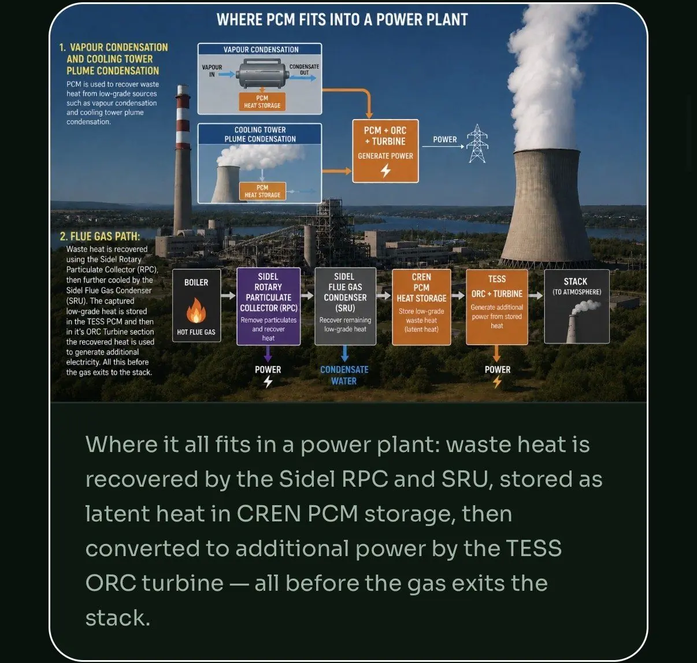

There are two levers. First, run the tower at higher cycles of concentration so less water goes down the drain as blowdown. The U.S. Department of Energy says going from three to six cycles cuts makeup water by 20 percent and blowdown by 50 percent. Second, reduce the heat the tower has to reject. That is the only way to cut evaporation, and it cuts fan and pump energy too.
A cooling tower is a simple machine with a hidden cost. It works by evaporating water. Every gallon that evaporates carries heat away, and every gallon has to be replaced with treated makeup water. Plants pay for that water, pay to treat it, and pay again to dispose of what they blow down.
Most plants manage the tower as a utility and rarely ask how much heat it is really being asked to remove. That is where the bigger savings sit.
Where a cooling tower loses water
The U.S. Department of Energy gives a simple water balance for any tower:
Makeup = Evaporation + Blowdown + Drift
- Evaporation. This is the cooling itself. It is the largest loss, and it cannot be avoided while the tower is doing its job.
- Blowdown. Evaporated water leaves its minerals behind, so the water left in the tower gets saltier. Operators drain some of it to keep scale and corrosion under control.
- Drift. Fine droplets carried out with the air. The DOE describes drift as small compared to evaporation and blowdown, and says baffles and drift eliminators control it.
Leaks and overflows add to this. They are worth a walk-round, because they are pure waste.
Lever 1: Run more cycles of concentration
Cycles of concentration is the ratio of dissolved solids in the blowdown to dissolved solids in the makeup water. It is roughly the same as the ratio of makeup volume to blowdown volume. A higher number means you are reusing the same water more times before you drain it.
The DOE says many systems run at two to four cycles, while six cycles or more may be possible. It also gives a clear example: increasing cycles from three to six reduces makeup water by 20 percent and blowdown by 50 percent.
There is a limit. Push cycles too high for your water quality and minerals scale up your heat exchange surfaces. That costs energy and can damage equipment. The DOE is clear that the goal is to maximise cycles only within your makeup water quality and treatment limits.
Practical steps from DOE guidance
- Install a conductivity controller so blowdown is triggered by measured water quality, not a timer or a valve left cracked open.
- Put flow meters on makeup and blowdown lines. Compare their ratio with the conductivity ratio. If they disagree, you have a leak, a meter fault or a control problem.
- Use low-mineral water as makeup where you can, such as air handler condensate.
- Add side-stream filtration in dusty sites, or softening where hardness is what limits your cycles.
- Cover open distribution decks to slow algae growth.
- Keep heat exchange coils clean. Fouled coils raise the load on the tower, and more load means more evaporation.
Ask your water utility about sewer credits too. Some bill sewer charges on water that never reaches the drain, based on metered makeup minus metered blowdown.
Lever 2: Send less heat to the tower
Better blowdown control trims the second loss. It does not touch the first. Evaporation is set by how much heat the tower must reject. One ASHRAE rule of thumb, quoted in an academic paper on evaporation losses, is that evaporation averages about 1 percent of the circulating flow for every 12.6°F (7°C) of cooling. It is a rough rule and varies with weather, but the logic is solid: less heat in, less water out.
So ask a different question. Where does the tower's heat come from, and could some of it be put to use before it gets there?
- Boiler and furnace exhaust. Stack heat captured with a flue gas condensing unit goes to useful work, and recovered heat can offset loads that would otherwise end up at the tower.
- Process and condenser heat. Hot water leaving process equipment can often warm something else first, such as feedwater, makeup air or building heat.
- Peak loads. Towers are sized for the hottest hour. If heat can be held in thermal storage and used later, the tower sees a flatter load.
Fan and pump energy follow the same rule. A tower that rejects less heat runs its fans less, and variable-speed drives let fan power fall with the load.

Illustrative example arithmetic
These numbers are invented to show the method. They are not a quote and not from any real site.
| Input | Example value |
|---|---|
| Makeup water at 3 cycles | 100 units |
| Makeup water at 6 cycles (DOE: 20% lower) | 80 units |
| Water cost, treated and disposed | $4.00 per 1,000 gallons |
| Example tower makeup at 3 cycles | 20 million gallons per year |
| Example saving at 6 cycles | 4 million gallons, about $16,000 per year |
Use your own metered makeup and your own water and sewer rates. Whether you can reach six cycles depends entirely on your water chemistry.
Where Sidel CREN fits
Sidel CREN does not replace your cooling tower or your water treatment programme. Its role is on the heat side. The Sidel SRU recovers heat and condensed water from exhaust gas, and Novacab TESS stores heat until it is needed. Together they target a lower heat load on the tower, and for some plants an ORC turbine can turn high-grade heat into power.
Any reduction in tower duty or water use is an engineered target. It is confirmed only by a metered baseline of your plant and a pilot, never assumed in advance. See how we work.
Quick answers
Where does a cooling tower lose water?
A cooling tower loses water three ways: evaporation, blowdown and drift. The U.S. Department of Energy gives the makeup water balance as makeup equals evaporation plus blowdown plus drift. Evaporation is the biggest share, and drift is small.
How many cycles of concentration should a cooling tower run?
The U.S. Department of Energy says many systems run at two to four cycles of concentration, while six cycles or more may be possible. The right number depends on makeup water quality and treatment limits, because too many cycles causes scale and corrosion.
Does cutting blowdown save much water?
It can. The U.S. Department of Energy states that increasing cycles from three to six reduces cooling tower makeup water by 20 percent and blowdown by 50 percent. Evaporation does not change unless the heat load on the tower changes.